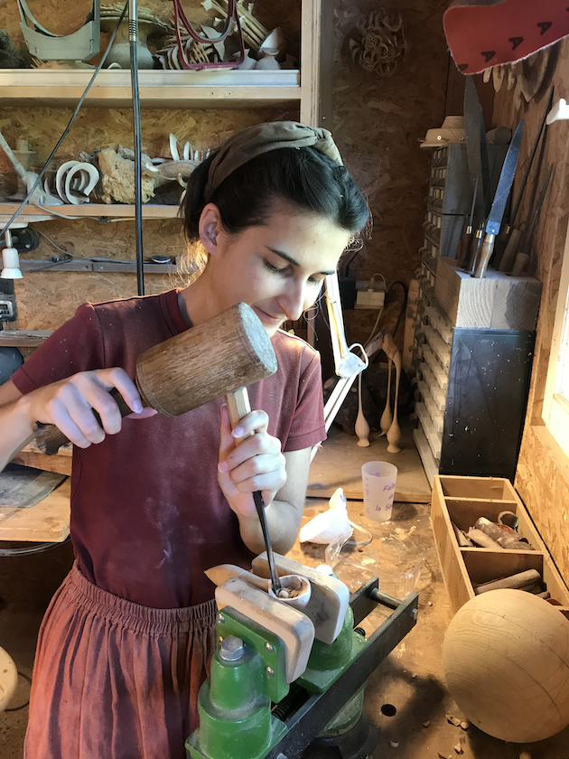
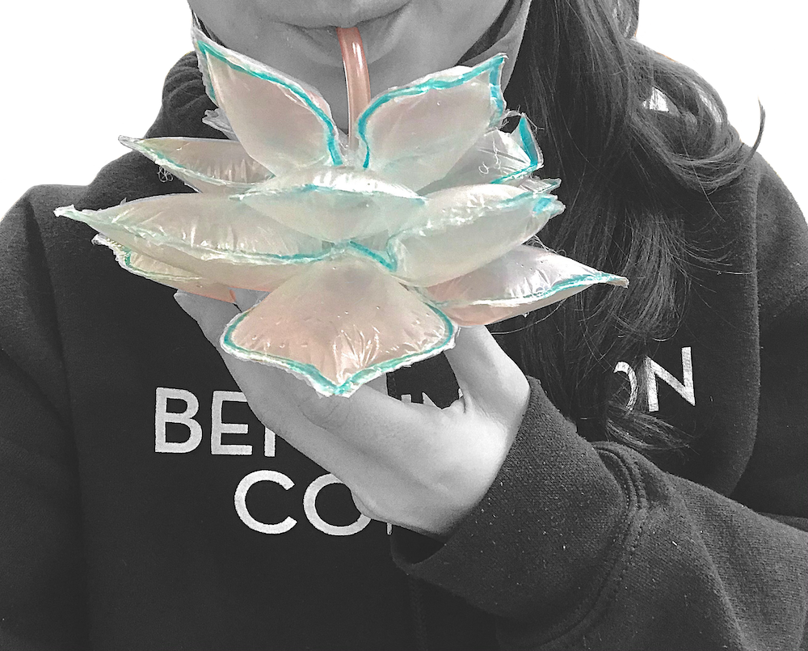

Caridea
Hand-made Inflatable Installation, welded LDPE Plastic
Produced May 2022, Estimated dimensions: 4x4x16 meters
Team of 16 students, Sculpture Faculty
John Umphlett, Technical Instructor
Dakota Pace
In my early artistic practice, I used to start each piece with a clear plan in mind – a determined outcome, carefully designed and controlled, as if the process of making art was merely a means to an end. I remember it like sketching with a pencil, with the eraser by my side, ready to scratch off anything that deviated from my vision, and leaving no space for my lines to grow or take unexpected turns. Sculpture was the discipline that taught me the value of connecting with my materials. It taught me to see them not as tools to manipulate, but as partners to collaborate with and respect. The medium spoke to me—quietly, but firmly—and I understood that true artistry is not about forcing an idea into existence, but about discovering it within the material. I learned this lesson through three transformative experiences.

My first lesson came from pottery throwing. At my internship in Saint-Quentin-La-Poterie, I watched my clay collapse time and time again whenever its foundation wasn’t perfectly centered on the wheel. Slowly, I learned that clay doesn’t respond to control but to guidance
guidance—its strength unfolding only when I respected its flow and adapted to its nature. My second lesson came from green woodturning. Under
Elizabeth Mézières
Elizabeth Mézières’s mentorship, I learned to read the grain of fresh living wood, to adapt to its moisture content and growth patterns. Instead of imposing rigid forms, I let the wood’s organic beauty dictate its shape, and trusted its innate rhythm to inform the final design. My last and most surprising lesson came from LDPE plastic, a seemingly rigid material that revealed its own collaborative possibilities, inspiring the creation of “Caridea”.
A Living Sculpture
Caridea is a ~4x4x16 meter inflatable installation made of 20 mil reinforced LDPE plastic. Its design incorporates successive pleats which unfold into a curve, a profile that evokes the organic shape of a caridean shrimp. When Caridea is inflated by a controlled airflow, its articulated folds extend into a dynamic structure that is both flexible and stable. Visitors can easily slide through the ventilation channel, pull themselves into the structure and enter an expansive, concave chamber that evokes a sense of curiosity and wonder. The pneumatic structure can withstand significant pressure. It can support the weight of a person suspended from a rope tied to the upper arch, as well as the force of several people leaning against the lateral sections. Caridea’s flexibility allows it to fit any environment. Its sustainability makes it ideal for hosting a wide range of events, classes, and interactive experiences—whether sound, light, or wind-based—offering a space for ongoing discovery and experimentation.
A Generative Design

My first experiment:
An inflatable flower
Caridea was born in the Unconventional Spaces course led by sculpture faculty John Umphlett and technical instructor Dakota Pace. A collaborative effort of 16 students from varied fields—sculpture, dance, music, painting, fashion, writing, and more—brought the installation to life. Despite our different backgrounds, we shared a common thread: the act of creation. We worked together to design a structure that wasn’t just an object but a process, one that could teach us through its unfolding form. We started small, with simple polyethylene bags, inflating them with straws to create palm-sized forms that seemed to breathe in our hands. As our confidence grew, so did the scale of our creations. With thicker plastics, we started building forms that we could step into, crawl through, and wear—each iteration teaching us something new about scale, material, and the interplay between air and form. Caridea was shaped by a series of creative trials, where the journey mattered more than the destination.
Made by Hand
For simplicity of construction, we chose one primary construction method to drive the form: pleating. Its capacity to turn a flat, two-dimensional surface into multi-planar curves made it a perfect choice. Using just three tools: a utility cutter, a fabric iron, and phenolic rails, we cut two triangles, arranged them into pleats, and pressed each fold. The half-sphere part was more complex, requiring us to draw a pattern, cut it, and iron it into three dimensions. Thanks to our professors’ careful measurements, we ensured minimal plastic waste. Caridea’s open design allows it to adapt to any orientation. With its adaptable nature, the structure can blend into any environment, contour to the landscape and mold itself into the terrain.
With thanks to Professor John Umphlett for the process images below.